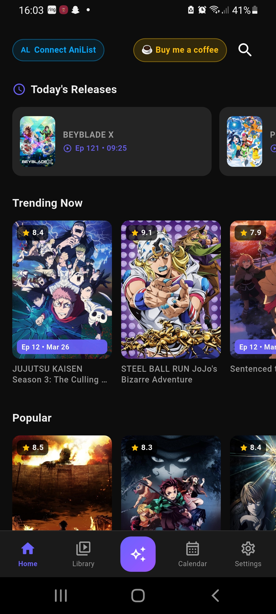
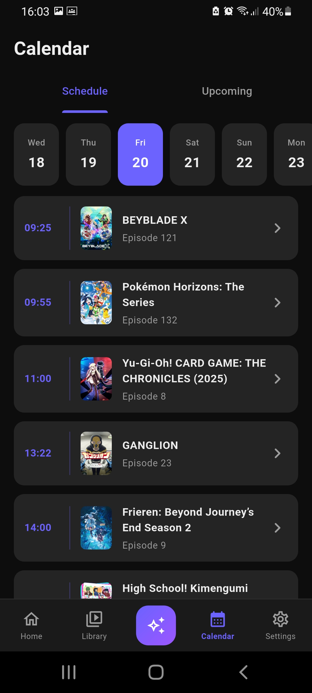
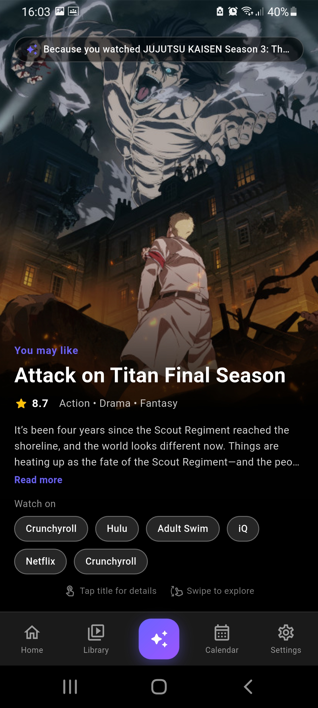

Built by a fan
I'm 17, and I built AniFlow because anime tracking felt messy. Switching apps, forgetting episodes — it just wasn't it.
So I built something clean, fast, and actually useful.
AniFlow is just getting started.
The smartest way to track, discover, and share anime — all in one place.
Download on Google Play


Import or search instantly
Pick up where you left off
Scroll your FYP
TikTok-style discovery
Never forget episodes
Stay updated
Sync your library
Organise shows
See what's airing
Perfect timing alerts
Share anime
Smarter discovery
I'm 17, and I built AniFlow because anime tracking felt messy. Switching apps, forgetting episodes — it just wasn't it.
So I built something clean, fast, and actually useful.
AniFlow is just getting started.